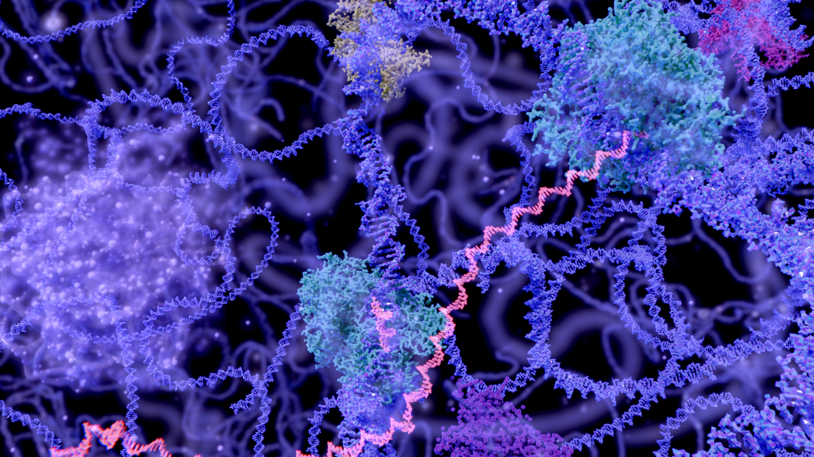
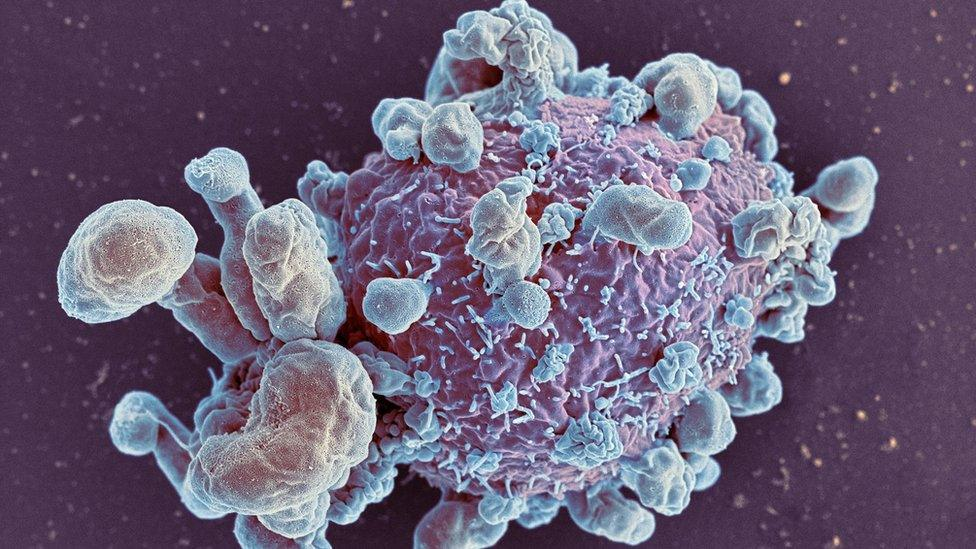

AI & Data Science Enthusiast | Computer Engineering Graduate
About Me
I’m Emilja, a Computer Engineering graduate currently studying Applied AI at George Brown College in Toronto. My passion lies in using artificial intelligence to solve complex real-world problems — from healthcare diagnostics to mental health prediction. I have hands-on experience in data analytics, machine learning, and deep learning, with a growing focus on responsible AI. I’ve led and contributed to research-based projects involving medical image classification, RNA data analysis, and stress/depression assessment. With strong communication, leadership, and teamwork skills, I aim to make a meaningful impact in the field of AI and contribute to technologies that matter.
Education
Applied AI Solutions Development
George Brown College – Toronto, ON September 2024 – Present
Bachelor of Computer Engineering, Graduated with Honors
Epoka University – Tirana, Albania October 2021 – July 2024
Thesis: “Detection of Brain Diseases from MRI and CT scans using Machine Learning Algorithms.”
Built a classification model for enzymes using curated datasets and deep learning. Applied feature selection and visualization techniques to ensure optimal accuracy and interpretability.

Brain Disease Detection from MRI & CT
Applied various ML & DL algorithms to medical imaging data, achieving over 90% accuracy. Explored applications in neuroscience.
Tumor Classification with RNA-Seq
Applied dimensionality reduction and ML to RNA data, achieving near-perfect classification accuracy.

AI-Powered Depression Assessment
Preprocessed mental health data and trained TabNet model to predict depression with 94% accuracy. Integrated into web form.
Work Experience
IT Support Specialist – Balfin Group
Worked with Dynamics NAV, assisted in database management and client-side support using MySQL.
Teaching Assistant – alphaPlan
Taught Python to high schoolers, coordinated lesson planning and supported a teaching team in delivering content.
Part-time Associate – Shoppers Drug Mart
Working part-time in Toronto since March 2025, contributing to store operations and customer service.
Volunteer Experience
ICT Bootcamp – Code for Albania
Mentored students in React Native and UX Design; organized events and assisted curriculum development.
Red Cross Volunteer
Led donation drives, supported elderly and mentally disabled individuals, and coordinated humanitarian activities.